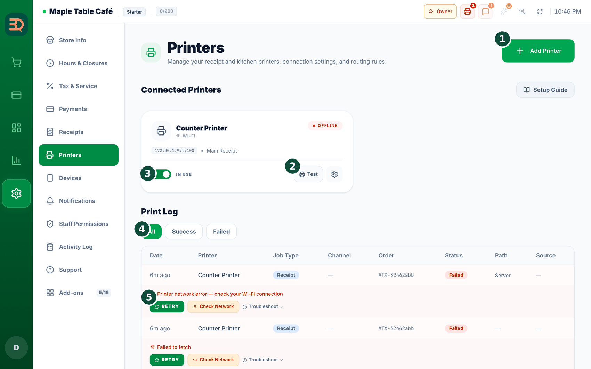
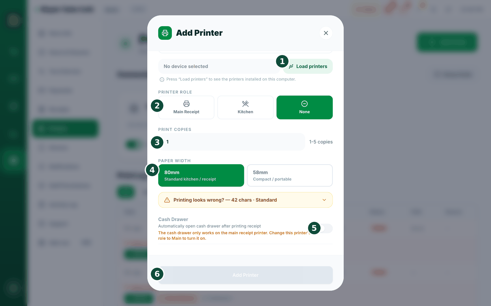
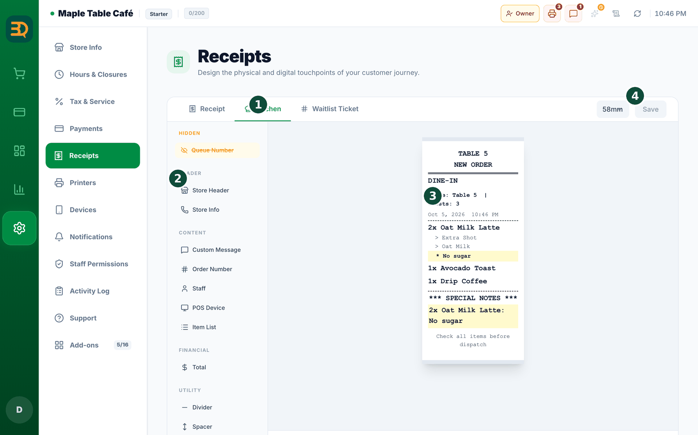
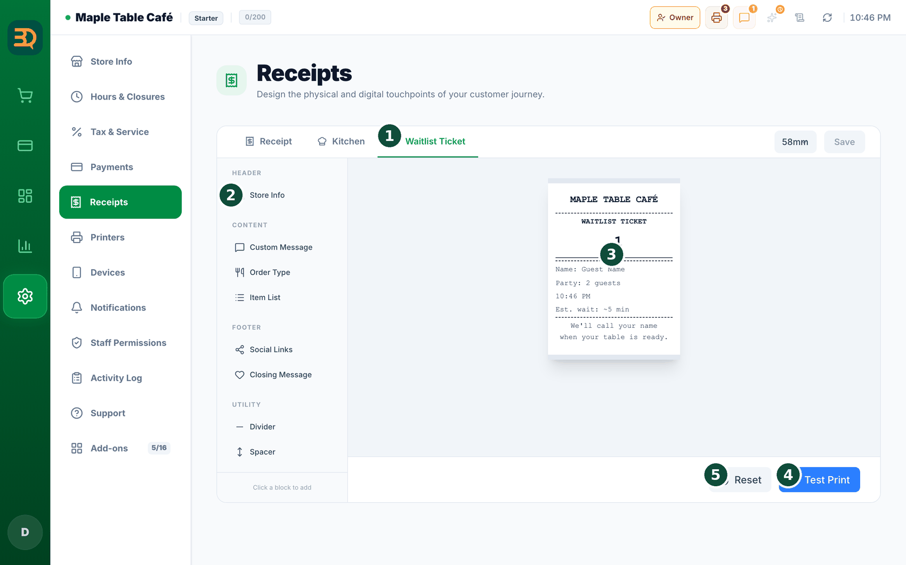

23小票与打印机
BrewDesk 可以为顾客打印小票，也可以为厨房打印单据。让我们一步一步添加打印机。即使打印机卡纸，您的订单也依然安全。



- 打开
Settings › Printers。您会看到 Connected Printers（已连接的打印机）以及 Add USB Printer（添加 USB 打印机）、Add Wi-Fi Printer（添加 WiFi 打印机）和 Add Printer（添加打印机）按钮。 - 点击 Add Wi-Fi Printer（或 Add USB Printer），打印机窗口随即打开。
- 输入 Printer Name（打印机名称），例如“Kitchen Printer”，以便区分各台打印机。
- 选择 Connection Type（连接类型）——USB 或 Wi-Fi/LAN。
- Wi-Fi 打印机：输入打印机的 IP Address（IP 地址，例如 192.168.1.50）和 Port（端口，通常为 9100），然后点击 Connect（连接）。如果只知道 IP 的一部分，点击 Search（搜索）进行扫描。
- USB 打印机：在 Select installed printer 下，点击 Load printers，然后从列表中选择您的打印机。（BrewDesk 桌面应用必须处于运行状态，并且打印机必须已安装在您的操作系统中，才会出现在列表里。）

- 选择 Printer Role（打印机角色）：Main Receipt（主收据，顾客小票）、Kitchen（厨房，厨房单）或 None（无角色）。
- 如果是厨房打印机，请选择 Kitchen Print Mode（厨房打印模式）：Whole Order（整单，每个订单一张单据）或 Per Item（按项目，每个菜品一张单据）。如需多份，请设置 Print Copies（打印份数）。
- 点击 Test Print（测试打印）打印一张测试页，然后点击 Add Printer 保存。
含税价门店？税额行现在会注明。如果您的价格已含税，小票和账单在税额行的标签后会打印 “incl.”（含）。金额没有变化，合计也没有变化——这样做是为了避免有人把税额行加到商品之上，误以为合计有误。税款一直是包含在内的，现在纸面上也写明了。
文字被截断，或非英文字符打印成乱码？打开打印机窗口靠下方的 “Printing looks wrong?”，然后点击 Print test receipt（打印测试收据）。系统会打印一份样张，您只需对照回答两个问题——① “Which block looked clean?”（哪个方块打印得整齐？）（选择文字行没有换到下一行的那一个），以及 ② 您实际能看清 [A] 和 [B] 哪一行。无需查找任何数字——只需选看起来正确的即可。
温馨提示：80mm 打印机现在默认每行 42 个字符，适合大多数打印机——如果您的小票看起来正常，请保持不变。如果两个方块看起来都不对，请选择 Enter number（手动输入），并输入测试收据底部标尺上的数字（20–96）。
Wi-Fi 打印机显示“No print confirmation”。有些 Wi-Fi 打印机无法告知 BrewDesk 纸张是否真的打印出来了。它们的卡片上会显示一条灰色提示：No print confirmation（无打印确认）——“This printer can't report whether paper came out. A ticket that fails to print won't be flagged.”（此打印机无法回报是否出纸。打印失败的单据不会被标记。）点击 Test Print 时，您会看到 “Test page sent. This printer can't confirm printing — check that paper came out.”（测试页已发送。此打印机无法确认打印——请检查是否出纸。）所以请亲自查看打印机。这并非故障——只是您的打印机无法回报而已。
不知道打印机的 IP 地址？没问题。点击 Search（搜索），BrewDesk 会在您的网络中查找。Wi-Fi 打印机通常使用端口 9100——如果不确定，请保持原样。
使用 iPad？打印功能可直接在应用内使用——无需浏览器辅助程序。只需用同样的方式添加您的 Wi-Fi / LAN 打印机（点击 Search 查找），或使用 AirPrint 打印机。
没有厨房打印机？没关系。如果您没有设置厨房打印机，BrewDesk 会直接跳过厨房单，不会出任何问题。
一台打印机承担两项任务？如果同一台打印机既打印小票又打印厨房单（合并模式），您仍可开启 Per Item，让每个菜品各打一张厨房单——当一台机器包办所有任务时很实用。
日常打印。打印机保存后，收款时会打印小票，将订单发送到厨房时会打印厨房单。需要再打印一份？打开订单并点击 Reprint（重新打印）。如果打印失败，任务会在列表中等待——只需点击 Retry（重试）。订单绝不会丢失。
USB 打印机——使用已安装的驱动（推荐）
这是最简单的方法。按常规方式安装打印机的驱动（Mac 通常自动完成；Windows 使用厂商驱动），打开 BrewDesk 桌面应用，然后在 Settings › Printers › “Add USB Printer” 中选择 Select installed printer › Load printers，并选中它。Wi-Fi / LAN 打印机也不需要这个流程。
订单号与叫号
在柜台服务模式下，每笔订单都有一个编号。这非常适合喊出“现在请 A-005 号取餐！”，让顾客知道饮品何时做好。下面介绍如何设置，并让它显示在小票上。
- 打开
Settings › Tables，找到 Counter Mode（柜台模式）选项。 - 开启 Auto Order Number（自动订单编号），让每笔订单都有自己的编号。
- 如有需要，可设置 Number Prefix（编号前缀）——例如 A-001。
- 开启 Daily Reset（每日重置），每天重新开始计数，这样每天早上都从头开始。
- 该编号会作为订单号打印在小票上——例如 “ORDER: #TX-ORD-1042”。
订单号有什么用？这是把做好的饮品与正确顾客对应起来的简便方法——您喊编号，而不是喊姓名。
您还可以在 Settings › Receipts 中设计小票的样式。其中有 Receipt（收据）、Kitchen（厨房）、Queue Number（叫号）和 Waitlist Ticket（排队票）几个标签页。拖动模块即可显示或隐藏诸如醒目的叫号、自定义留言、退款政策、会员印章或二维码等内容。右侧的实时预览会准确显示打印出来的效果。
想让号码又大又醒目？在小票编辑器中开启 Queue Number 模块。您修改设置时，右侧的预览会同步更新，让您始终清楚打印出来的小票是什么样子。


